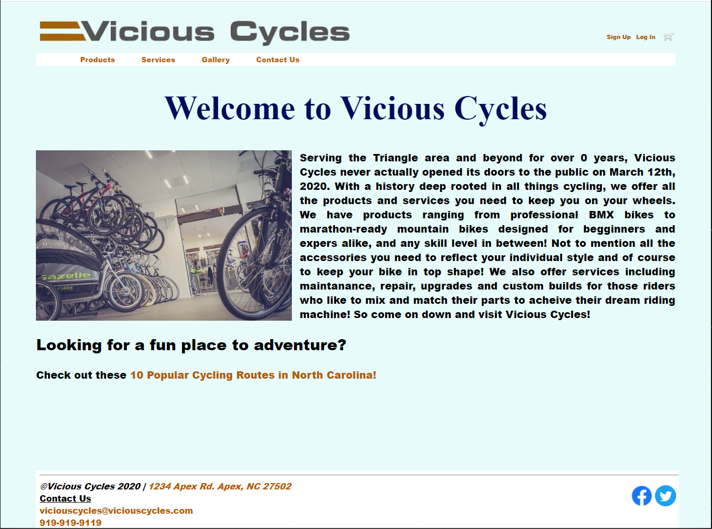

Sean Hall
Web Developer - Student
This is my third semester at Wake Tech studying Web Development. So far I am enjoying my classes very much, and have learned a great deal. I first became interested in front-end developing when I was a teenager styling my MySpace pages using HTML and CSS and knew that I would love to start a career developing web pages. It wasn't until I was an adult that I had the opportunity to pursue a degree in this field.
Vicious Cycles
Vicious Cycles was a project done in an earlier web design course. This course focused on the basics of HTML and CSS including functional website navigation, image sizing, social media links, form elements and most importantly how to design a responsive web site adaptable to different sized viewports.
I've only worked a few entry level jobs since high school. My most recent position became my current career when I joined the company in 2011.
Assistant Manager
Walgreens
February 2011 - Present
Responsible for overseeing the operations of a Walgreens store in collaboration with the store manager.
Daily responsibilities:
- Monitor and analyze the customer service provided by team members.
- Analyze inventory trends and supervise inventory management.
- Maintain knowledge of all computer and technology systems and software.
- Ensure compliance with all corporate policies and applicable employment laws.
Pickens County High School - Jasper, GA
Graduated 2011
Wake Technical College - Raleigh, NC
Web Developer AAS Degree
2019 - ???